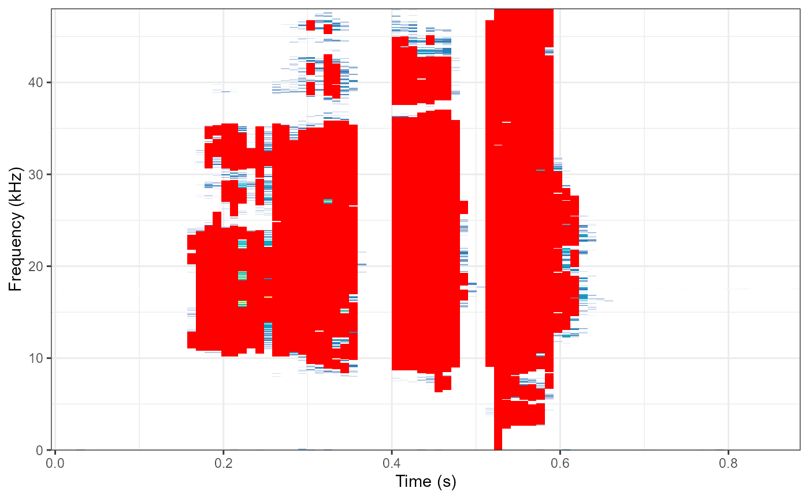
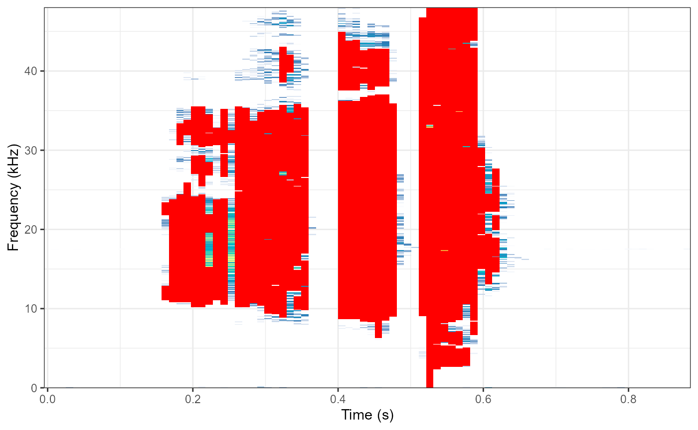

Introduction
The Broadband Activity Index (BBAI) is an acoustic index designed to detect and quantify broadband acoustic activity by identifying ‘clicks’ in audio recordings. Originally developed for monitoring environmental noise such as rain and wind in soundscape recordings, this index has broader applications in environmental acoustic monitoring and bioacoustic research, including quantification of stridulation activity by Orthoptera (crickets, grasshoppers, etc.), non-stridulating pests in stored food or wood, among others. The BBAI follows the principle that most of these sounds have broadband acoustic signatures that appear as vertical “clicks” in a spectrogram. These clicks span multiple frequency bins simultaneously and represent rapid, broadband acoustic events, also known as transient sounds.
Step-by-Step Process
1. Signal Preprocessing
The function begins by preprocessing the audio signal: - DC Offset Removal: Eliminates any constant bias in the signal - High-Pass Filtering: Optional filtering to remove low-frequency noise (default 0 Hz, commonly set to 500 Hz for consistency)
2. Spectrogram Generation
A spectrogram is created using the spectrogram_cutoff()
function with: - Frequency Resolution: Determined by
the freq.res parameter (default 50 Hz) - Noise
Reduction: Row-wise noise reduction is applied -
Amplitude Cutoff: Values below the threshold (default
-60 dBFS) are removed - dBFS Conversion: Amplitude
values are converted to decibels full-scale
3. Click Detection Algorithm
The core detection algorithm works column-wise (time-frame by time-frame) through the spectrogram:
Calculate differences between adjacent frequency bins
Identify contiguous regions where differences are small
Allow small gaps within clicks
Keep only regions longer than minimum click length
Key Detection Parameters:
difference: Maximum amplitude difference (dB) between adjacent frequency bins to be considered part of the same click (default 10 dB)click.length: Minimum length in frequency bins for a valid click (default 10 bins)gap.allowance: Maximum gap size (in frequency bins) allowed within a single click (default 2 bins
4. Click Characterization
For each detected click, the algorithm calculates:
Height: Number of frequency bins spanned
Spectral Centroid: Frequency-weighted center of the click
Temporal Position: Time frame location
Usage Example
if (!require("RthopteraSounds")) install.packages("RthopteraSounds")
library(RthopteraSounds)
library(Rthoptera)
# Load example data
data(coryphoda)
# Basic usage
result <- broadband_activity2(coryphoda,
freq.res = 100,
cutoff = -50,
spectrogram = TRUE,
verbose = TRUE) ## Calculating Broadband Activity Index on the left channel...
## Automatic window length: 960
## Broadband Activity: 25.7
## Low-frequency Activity (0 - 2 kHz): 1.1 %
## Mid-frequency Activity ( 2 - 8 kHz): 6.2 %
## High-frequency Activity ( 8 - 15 kHz): 32.1 %
## Ultra-frequency Activity ( 15 - 22 kHz): 42.7 %
## # A tibble: 1 × 17
## index channel value nclicks prop.clicks click.rate mean.length var.length
## <chr> <chr> <dbl> <int> <dbl> <dbl> <dbl> <dbl>
## 1 bbai left 25.7 118 1.3 134 91.9 11589.
## # ℹ 9 more variables: sd.length <dbl>, mean.centroid <dbl>, sd.centroid <dbl>,
## # var.centroid <dbl>, mean.click.dist <dbl>, lfa <dbl>, mfa <dbl>, hfa <dbl>,
## # ufa <dbl>
# Advanced usage with custom frequency bands
result <- broadband_activity2(coryphoda,
freq.res = 100,
cutoff = -50,
lf_roof = 1.5, # 0-1.5 kHz low freq
mf_roof = 6, # 1.5-6 kHz mid freq
hf_roof = 12, # 6-12 kHz high freq
uf_roof = 20,# 12-20 kHz ultra freq
click.length = 15, # Longer minimum
difference = 8, # Stricter difference threshold
spectrogram = TRUE) ## Calculating Broadband Activity Index on the left channel...
## Automatic window length: 960
## Broadband Activity: 24.6
## Low-frequency Activity (0 - 1.5 kHz): 1.1 %
## Mid-frequency Activity ( 1.5 - 6 kHz): 4.9 %
## High-frequency Activity ( 6 - 12 kHz): 18.4 %
## Ultra-frequency Activity ( 12 - 20 kHz): 40 %
## # A tibble: 1 × 17
## index channel value nclicks prop.clicks click.rate mean.length var.length
## <chr> <chr> <dbl> <int> <dbl> <dbl> <dbl> <dbl>
## 1 bbai left 24.6 103 1.2 117 101 10019.
## # ℹ 9 more variables: sd.length <dbl>, mean.centroid <dbl>, sd.centroid <dbl>,
## # var.centroid <dbl>, mean.click.dist <dbl>, lfa <dbl>, mfa <dbl>, hfa <dbl>,
## # ufa <dbl>
# View results table
print(result$summary) ## # A tibble: 1 × 17
## index channel value nclicks prop.clicks click.rate mean.length var.length
## <chr> <chr> <dbl> <int> <dbl> <dbl> <dbl> <dbl>
## 1 bbai left 24.6 103 1.2 117 101 10019.
## # ℹ 9 more variables: sd.length <dbl>, mean.centroid <dbl>, sd.centroid <dbl>,
## # var.centroid <dbl>, mean.click.dist <dbl>, lfa <dbl>, mfa <dbl>, hfa <dbl>,
## # ufa <dbl>Output Column Explanations
Core Identification Columns
index: The name of the index being
calculated. Always “bbai” (Broadband Activity Index). This is useful
when merging results with other acoustic indices.
channel: Indicates which audio channel
was analyzed (“left”, “right”, “mix”, or “each” for stereo
processing).
Primary Activity Measures
value: The main Broadband Activity
Index value, expressed as a percentage. This represents the proportion
of spectrogram cells that were classified as part of a “click” relative
to the total number of cells in the spectrogram. Higher values indicate
more broadband acoustic activity.
nclicks: The total number of discrete
clicks detected in the recording. A click is defined as a contiguous
sequence of frequency bins that meet the detection criteria (minimum
length, amplitude difference thresholds, etc.).
Temporal Distribution Measures
prop.clicks: The proportion of time
frames that contain at least one click, expressed as a decimal (0-1).
This indicates how temporally distributed the clicks are throughout the
recording.
click.rate: The rate of click
occurrence per second (clicks/second). This provides a temporal density
measure of acoustic activity.
mean.click.dist: The mean distance (in
time frames) between consecutive clicks. This helps characterize the
temporal clustering of acoustic events.
Click Morphology Measures
mean.length: The average length of
detected clicks, measured in frequency bins. This indicates the typical
frequency span of broadband events.
var.length: The variance in click
lengths. High variance suggests clicks of very different frequency
spans, while low variance indicates more uniform click sizes.
sd.length: The standard deviation of
click lengths. This is the square root of var.length and
provides a more interpretable measure of click length variability.
Spectral Centroid Measures
mean.centroid: The average spectral
centroid of all detected clicks, expressed in kHz. The spectral centroid
represents the “center of mass” of the frequency spectrum for each
click, indicating where most of the acoustic energy is concentrated.
sd.centroid: The standard deviation of
click centroids. This measures how much the frequency center of clicks
varies across the recording.
var.centroid: The variance of click
centroids. High values suggest clicks with very different spectral
characteristics.
Frequency Band Activity Measures
lfa (Low-Frequency Activity): The
percentage of cells classified as clicks in the low-frequency band (0 to
lf_roof kHz, default 0-2 kHz). This captures activity in
the lower portion of the frequency spectrum, often associated with
larger organisms or environmental sounds.
mfa (Mid-Frequency Activity): The
percentage of cells classified as clicks in the mid-frequency band
(lf_roof to mf_roof kHz, default 2-8 kHz).
This band often captures vocal activity from many animals and some
mechanical sounds.
hfa (High-Frequency Activity): The
percentage of cells classified as clicks in the high-frequency band
(mf_roof to hf_roof kHz, default 8-15 kHz).
This range often includes insect activity, bird calls, and
higher-pitched mechanical sounds.
ufa (Ultra-Frequency Activity): The
percentage of cells classified as clicks in the ultra-high frequency
band (hf_roof to uf_roof kHz, default 15-22
kHz). This captures very high-frequency sounds like ultrasonic insect
calls, bat echolocation, or high-frequency electronic noise. Will be set
to NA if hf_roof exceeds the Nyquist
frequency.
Stereo Processing Additional Columns
When processing stereo recordings with channel = "each",
the function returns separate values for left (_l) and right (_r)
channels, plus averaged values (_avg) for each measure:
value_l,value_r,value_avgn_clicks_l,n_clicks_r,n_clicks_avgAnd so on for all measures…
Frequency Band Configuration
Default Thresholds
The frequency bands are defined by the threshold parameters:
Low-Frequency Band (LFA): 0 kHz to
lf_roof(default 2 kHz)Mid-Frequency Band (MFA):
lf_rooftomf_roof(default 2-8 kHz)High-Frequency Band (HFA):
mf_rooftohf_roof(default 8-15 kHz)Ultra-Frequency Band (UFA):
hf_rooftouf_roof(default 15-22 kHz)
Automatic Adjustments
The function includes intelligent fallback logic:
uf_roofAdjustment: Ifuf_roofis set higher than the Nyquist frequency (sampling rate ÷ 2), it is automatically adjusted to the Nyquist frequency to prevent analysis beyond the available frequency range.hf_roofAdjustment: Ifhf_roofexceeds the Nyquist frequency, it is adjusted to the Nyquist frequency, andufais set toNAsince no ultra-frequency band would be available.Empty Bands: If a frequency band contains no frequency bins (e.g., if thresholds are set inappropriately), the corresponding activity measure will be 0.
Parameter Tuning Guidelines
Interpretation Guidelines
Activity Level Interpretation
- BBAI < 1%: Very low broadband activity
- BBAI 1-5%: Low to moderate activity
- BBAI 5-15%: High activity
- BBAI > 15%: Very high activity (may indicate noise or equipment issues)
Limitations and Considerations
Technical Limitations
- Sampling Rate Dependency: Higher sampling rates provide access to ultrasonic frequencies
- Frequency Resolution Trade-off: Better resolution requires longer processing time
- Amplitude Sensitivity: Performance depends on appropriate cutoff thresholds
Conclusion
The Broadband Activity Index provides a powerful tool for quantifying acoustic activity across multiple frequency bands. Its ability to detect broadband “clicks” makes it particularly valuable for monitoring non-vocal organisms and environmental disturbances. The enhanced frequency band analysis allows researchers to understand not only the overall level of acoustic activity but also its spectral distribution, providing deeper ecological insights.
By understanding the underlying detection algorithm and properly tuning parameters for specific applications, researchers can effectively use the BBAI for a wide range of acoustic monitoring and analysis tasks.